off-gridmeshcoretelecommunications
ReMesh
Enhanced fork of a lightweight, hybrid routing mesh protocol - MeshCore
View project on GitHub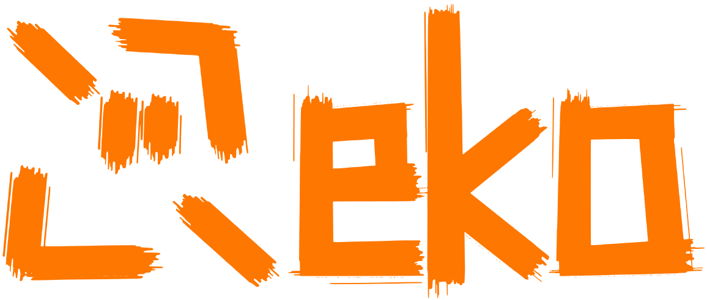
Developer & student which loves programming, open-source and Linux. Almost everything on this site reacts to you. Try it yourself!
Hi, I'm Andrej - Reko THE Developer.
I started programming, when I was ± 10y.o., however it didn't really grab me until I was 14, when I started actively learning C# and made my first game. I made a lot of projects since then, but most of them are unfinished or forgotten. That's why I created this site and my instagram showcase channel - so that the world finally knows about me.
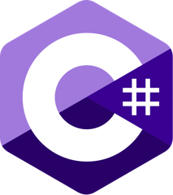
C#Python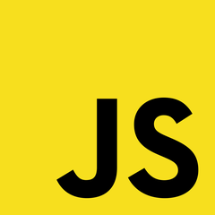
JavaScriptKotlin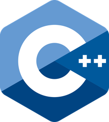
C++CRust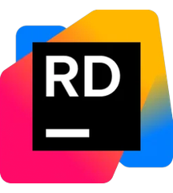
RiderIntelliJ IDEAUnityBlender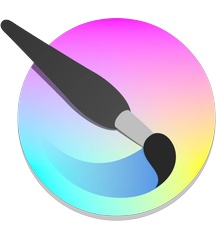
Krita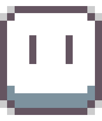
Aseprite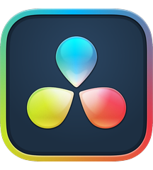
DaVinci Resolve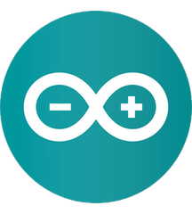
Arduino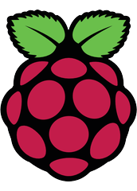
Raspberry PiLinux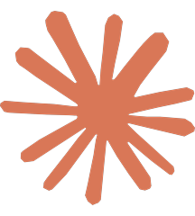
Claude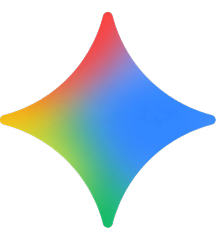
Gemini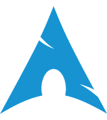
Arch LinuxDebianFedoraLinux MintBazziteVoid Linux~→Yes it is true - I also touch grass
But really - I love to go outside, and do other stuff than just sit at my computer the whole day. Hiking, biking, skiing... Check the waypoints on the map to learn more!
I do hike a lot. I love cinematic views, mountains, and places which are hard to find or hard to get to.
Bike is good, when you want to see more, in less time. I cycle long distances, but also like hitting the trails every now and then with friends, or alone.
I love winter as much as any other season. Skiing is one of my favorite activities which come with it.
Geocaching is a GPS game, about trying to find "treasures". Take your map, compass and hint to find it. It functions all over the world, you can find out more on their website. I am an owner of over 20 of these caches (treasures), and found more than 750 of them. Who knows, maybe you'll find one made by me...
I am not a radio amateur... yet. But I have my Motorola T82 Extremes, which don't need a license. I also own LILYGO T-Beam, with which I'm making connections through the mesh. I'm also developing my own client for it!
Enhanced fork of a lightweight, hybrid routing mesh protocol - MeshCore
View project on GitHubCollege, where I would like to continue my educational path in.
I'm currently studying this high/middle school (depends if you're reading this from UK/EU :D). My field is electrical engineering. My school has field for IT too, but I think it would not teach me anything that I don't already know, so I took the "harder path".
All my social media in one place.
This site remembers your achievements and your Sound on / off choice in your browser's local storage. It is never sent to me or to anyone else: no cookies, no tracking, no analytics. The fonts are hosted right here too. The Instagram videos in Social media only load after you click "Load videos", and that choice isn't saved.
Want it gone? "Reset achievements" at the bottom of the Achievements window wipes your progress, and clearing this site's data in your browser's settings deletes everything.
Social media
I do content about
programming and electrotechnical engineering!
I realized, that I have like a million projects, but never showcased them to anyone, except few of my friends. I put some of my projects on github, but it didn't get any views anyway. I wanted to change that - I created a developer channel, where I'm putting some of my newest work, and I can proudly say, that it's working :). It's still not "popular", but better than nothing, and it means a lot to me. Want to watch some of my work? Or just support me? Click on one of my channels down below:
This video lives on Instagram.
Loading it connects your browser to Instagram (Meta), which may set cookies and collect data under their privacy policy. Nothing loads until you say so.
or open it on InstagramThis video lives on Instagram.
Loading it connects your browser to Instagram (Meta), which may set cookies and collect data under their privacy policy. Nothing loads until you say so.
or open it on InstagramFind more here ;)